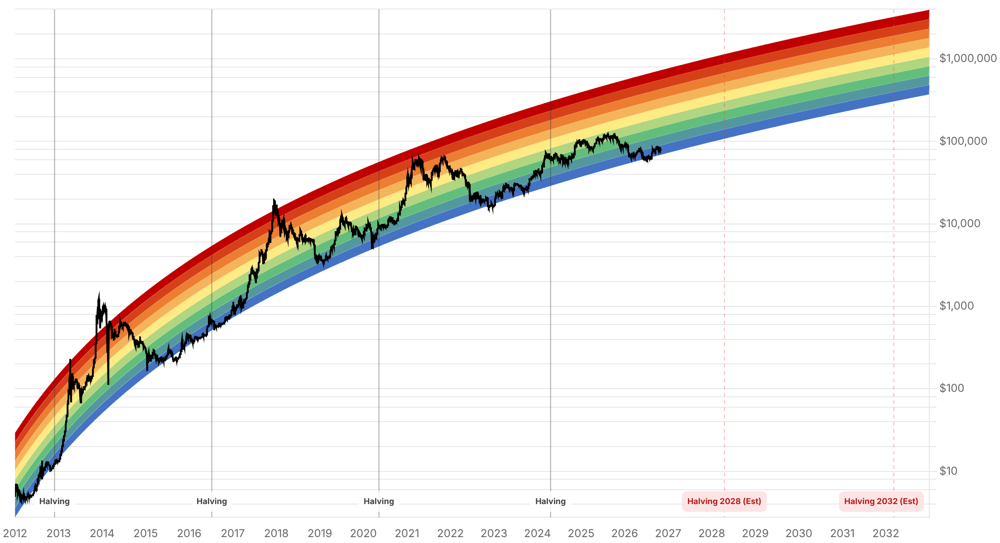

Reporte financiero
BTC cotiza en USD 77.267,29 en vivo (07:14 UTC), prácticamente plano intradía (+0,08%) tras el desplome de los últimos dos días, y todavía por debajo de los USD 78.345 de ayer y muy por debajo de los USD 81.267 del 28 de octubre. Lo nuevo desde el reporte de ayer -y el catalizador que ayer no se pudo confirmar para la caída del Fear & Greed Index de 51 a 30-: Binance sufrió el 29 de octubre el mayor robo de criptomonedas de la historia, con estimaciones de entre USD 2.000M (reporte inicial) y USD 6.300-6.430M (cifra de Binance y del analista on-chain Elliptic, la más citada) drenados de sus hot wallets mediante una firma de transacciones comprometida mediante una delegación EIP-7702 en Ethereum -no un hackeo de claves privadas ni una falla de contrato inteligente, según Binance-. El robo se extendió unas tres horas (20:05-23:56 UTC) a través de unas diez-once blockchains. Binance suspendió retiros en múltiples redes como medida de precaución, su cofundador Changpeng Zhao reconoció en X que 'parece ser un hackeo a Binance', y la empresa afirmó que los fondos de los usuarios están 'completamente seguros' y que cubrirá las pérdidas con su fondo SAFU y fondos propios. Tether y Circle congelaron en conjunto más de USD 2.600-3.000M de lo robado en stablecoins. Elliptic considera 'muy probable' la atribución a actores vinculados a Corea del Norte (mismo patrón que el hackeo a Bybit de 2025), aunque sin confirmación oficial de un gobierno o agencia policial. El shock desató liquidaciones por cerca de USD 1.000-1.500M en 24 horas (CoinGlass) y llevó a BTC a un mínimo intradía de ~USD 76.460-78.300 el 29 de octubre, antes de estabilizarse en el rango actual. En paralelo, Strategy (MSTR) cayó casi 10% el viernes 30 (parte del selloff cripto más amplio por el hackeo) pese a que analistas de StoneX (PT USD 435) y TD Cowen (PT USD 260) mantuvieron recomendación de compra, destacando que la recompra de ~USD 2.000M en acciones preferentes STRC y el nuevo esquema de dividendos diarios (vigente desde el 1 de noviembre) deja a la compañía mejor posicionada para retomar las compras netas de BTC. El Fear & Greed Index se mantiene sin cambios en 30 (Fear) -mismo valor que ayer-, señal de que el sentimiento ya había capturado la mayor parte del shock del hackeo en la lectura de ayer y hoy se mantiene estable en zona de miedo. Sin novedades verificadas desde ayer en la apelación del fallo del Reino Unido sobre los 61.000 BTC, en la Clarity Act (sin votación de piso confirmada en octubre; la ventana más probable sigue siendo la sesión de lame-duck tras las elecciones del 8 de noviembre), ni una respuesta reportada de Cantor Fitzgerald al plazo del 23 de octubre que le fijó el senador Blumenthal sobre sus vínculos con Tether.
El 29 de octubre, atacantes drenaron hot wallets de Binance a través de aproximadamente diez-once blockchains en una ventana de unas tres horas (20:05-23:56 UTC), usando una delegación EIP-7702 en Ethereum para lograr que los propios sistemas de firma de Binance autorizaran transacciones fraudulentas -Binance aclaró que no fue un robo de llaves privadas ni una falla de contrato inteligente, sino un compromiso en el proceso de firma (la primera explicación apuntó a la laptop comprometida de un ingeniero de DevOps, aunque investigaciones posteriores hallaron puntos de brecha adicionales). Las primeras estimaciones hablaban de USD 2.000M; Binance luego estimó el impacto en ~USD 6.300M y el analista on-chain Elliptic calculó USD 6.430M, calificándolo como muy probablemente el mayor robo de la historia (superando el hackeo a Bybit de 2025, USD 1.400M). Binance suspendió retiros en múltiples redes 'como medida de precaución' (según su vocero Ross O'Leary), y su cofundador Changpeng Zhao -ya no director ejecutivo- escribió en X que 'parece ser un hackeo a Binance' y que espera que los fondos de los usuarios queden 'totalmente cubiertos'. El co-CEO actual, Richard Teng, declaró que el ataque 'no fue ejecutado por una sola persona' y que el uso de la delegación EIP-7702 'no pasó por nuestros controles de aprobación normales'. Binance afirma que cubrirá la pérdida con su fondo SAFU y fondos propios -un cofundador de DefiLlama (0xngmi) señaló que la cifra representa menos del 1% de los USD 144.000M en activos bajo custodia de Binance, por lo que sería absorbible-. Tether congeló ~USD 1.560-1.800M y Circle ~USD 800M en stablecoins ligadas al robo (Elliptic verificó USD 2.840M congelados en total, ~44% del monto). Elliptic considera 'muy probable' que el ataque sea de actores vinculados a Corea del Norte, citando el lavado de fondos en paralelo con los del hackeo a Bitget, el patrón de preparación y targeting similar a Bybit, y la dificultad de coordinar un ataque a 11 blockchains en tres horas -pero aclara que no hay confirmación de un gobierno o del FBI (que sí atribuyó Bybit en cinco días, algo que no ha ocurrido aquí). El shock provocó liquidaciones por ~USD 1.000-1.500M en 24 horas según CoinGlass (más del 82% en posiciones largas), y BTC tocó un mínimo intradía de entre USD 76.460 y 78.300 el 29 de octubre antes de estabilizarse cerca de los USD 77.000-78.000 actuales.
El 30 de octubre, la acción de Strategy cayó 8,7% hasta USD 129,90 (~-27% en el año), en línea con el desplome generalizado de nombres ligados a cripto tras el hackeo de Binance -no por una noticia propia de la compañía-. Strategy cerró el trimestre con USD 5.070M en activos en dólares, incluyendo una reserva de caja de USD 4.830M que, según StoneX y TD Cowen, cubre entre 3,2 y 3,4 años de dividendos preferentes e intereses de deuda. La compañía gastó ~USD 2.000M recomprando su acción preferente STRC para acercarla a su valor par de USD 100, y los accionistas de STRC/STRF/STRK/STRD ya aprobados para devengo diario de dividendos (vigente desde el 1 de noviembre para STRC, enero de 2027 para el resto -ver reporte de ayer-). El BTC por acción cayó 3,7% en el año, reflejo de que la compañía priorizó caja y soporte a las preferentes sobre nuevas compras de BTC. Mark Palmer (StoneX) reiteró recomendación de compra con precio objetivo de USD 435, señalando que el objetivo de la reestructuración es 'reducir la volatilidad, mejorar la liquidez, ampliar la demanda' de los instrumentos preferentes; TD Cowen mantuvo compra con precio objetivo de USD 260, escribiendo que la conexión real para los accionistas comunes de MSTR es la estructura de liquidez de la compañía, 'no el precio de STRC de forma aislada'. Ambas casas coinciden en que la estructura preferente más estable y la liquidez mejorada dejan a Strategy mejor posicionada para retomar la acumulación neta de BTC y el crecimiento de BTC por acción, aunque el costo de corto plazo fue precisamente ese crecimiento más lento.
El Fear & Greed Index se mantiene en 30 puntos (Fear), idéntico al valor de ayer -la fuerte caída de 51 a 30 ya reportada ayer capturó la mayor parte del impacto del hackeo de Binance en el sentimiento; hoy no hay deterioro adicional. No se encontraron novedades verificables desde el reporte de ayer en la apelación del fallo del Reino Unido sobre los 61.000 BTC, ni en el avance de la Clarity Act en el Senado -no hay evidencia de una votación de piso programada para octubre; el mercado de predicción y los analistas (Galaxy Research) siguen viendo la sesión de lame-duck post-elecciones del 8 de noviembre como la ventana más probable para 2026-. Tampoco se encontró una respuesta reportada de Cantor Fitzgerald al plazo del 23 de octubre fijado por el senador Blumenthal para entregar documentación sobre sus vínculos con Tether; no hay confirmación de que la empresa haya respondido ni de que el Tesoro o el Departamento de Justicia hayan abierto una investigación formal a partir de ese plazo vencido.
| Periodo | Valor |
|---|---|
| 25 oct | 80024.01 |
| 26 oct | 80006.66 |
| 27 oct | 80805.08 |
| 28 oct | 81267.59 |
| 29 oct | 77775.11 |
| 30 oct | 77198.21 |
| 31 oct (en vivo) | 77267.29 |
| Periodo | Valor |
|---|---|
| Hoy | 30 |

“[The attack] was not carried out by one person... [the use of EIP-7702 delegation] did not pass through our normal approval controls.”
“Reduce volatility, improve liquidity, broaden demand [for the preferred instruments].”
El mercado ya absorbió el grueso del shock del hackeo de Binance (precio estable cerca de USD 77.000-78.000, Fear & Greed sin cambios en 30) pero persiste incertidumbre sobre el monto final de pérdidas (rango USD 2.000M-6.430M según la fuente) y si Binance reabre retiros en todas las redes sin incidentes adicionales -un nuevo deterioro en esa resolución podría presionar el sentimiento nuevamente a la baja.
Dos riesgos no resueltos conviven: el costo de financiamiento (la Fed sostuvo tasas en 3,75-4% el 28 de octubre con dos disidencias a favor de subir, lo que mantiene presión sobre activos de riesgo) y la confianza en la infraestructura de exchanges tras el mayor robo cripto de la historia -ninguno de los dos frentes se resuelve con la pausa de la Fed ni con la promesa de reembolso de Binance. Strategy, por su parte, queda en mejor posición de liquidez tras su reestructuración de preferentes para retomar compras netas de BTC, según StoneX y TD Cowen.
Sin cambios en los objetivos de precio de largo plazo ya reportados en ediciones anteriores (Citigroup, Bernstein, Standard Chartered, Tom Lee, NYDIG, Armstrong). El hackeo de Binance reabre el debate de fondo sobre riesgo de custodia centralizada -un tema recurrente en la tesis de autocustodia- pero no altera los catalizadores estructurales ya identificados (adopción institucional, halving de 2028, marco regulatorio pendiente vía Clarity Act).
El monto final de pérdidas sigue sin confirmarse (estimaciones entre USD 2.000M y 6.430M según la fuente) y la atribución a Corea del Norte no tiene confirmación oficial. Una reapertura de retiros sin incidentes sería una señal de estabilización; nueva información sobre el alcance del compromiso de los sistemas de firma de Binance podría reabrir la volatilidad.
El incidente reafirma el riesgo de concentrar activos en hot wallets de exchanges centralizados, incluso en el mayor exchange del mercado. Considerar autocustodia o cold storage para tenencias de largo plazo, independientemente de si Binance cumple su promesa de cubrir las pérdidas.
Con la reestructuración de preferentes completada y la caída de MSTR del 30 de octubre atribuible al contagio del sector más que a fundamentos propios, analistas ven margen para que la compañía retome la acumulación -vigilar si el BTC por acción vuelve a crecer en el próximo reporte trimestral.